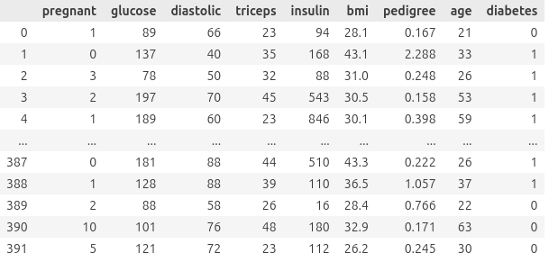

Tutorial Blog - February 20, 2026
Random Forest for Classification
Introduction
Random forest is a popular machine learning method used for classification and regression. Its advantage over logistic regression is that it doesn’t require fulfilled assumptions for normal distribution like “no outliers” and it does not assume linearity between the predictors and log-odds of the response, strict independence of errors, or absence of multicollinearity.
We will be using it here to classify patients as having diabetes or not. I was given this dataset as part of my Introduction to Regression course taken Fall 2025, where we used logistic regression to classify patients as having diabetes or not.
Tutorial (aimed at students like me)
“Students like me” means you know basic Python and have taken a regression class.
Imports, setup, cleaning…
Starting with imports: Since I’m most familiar with pandas (a popular data science package similar to R tidyverse functions), that’s what I’ll be using for this tutorial. We also need to import the scikit-learn package, which is generally considered the most popular data science package.
import pandas as pd
from sklearn.model_selection import train_test_split
from sklearn.ensemble import RandomForestClassifier
from sklearn.metrics import accuracy_score, classification_reportThe diabetes dataset is provided at the bottom of this page. The dataset is already pretty tidy, but I decided to drop the "row" column as I found it redundant. There isn’t any real cleaning to do.
diabetes = pd.read_csv("/path/to/Diabetes.txt", sep = r"\s+")
diabetes = diabetes.drop(columns = ['row'])At this point, diabetes should output this:

More setup…
We’re going to isolate our response variable and predictor variables to make life easier. (So far, this is just like logistic regression.)
predictors = diabetes.drop(columns=['diabetes'])
response = diabetes['diabetes']Good practice in machine learning is to split up data before training and evaluating a model for later model validation. scikit-learn makes this really easy.
Here, I’ve chosen the variable names pred_train, pred_test, response_train, and response_test for the output of the train_test_split function. The function returns what I’ve described with the variable names: training predictor variables, testing predictor variables, training response variables, and testing response variables.
I’ve chosen a test size of 0.2 for an 80-20 split, which is pretty standard. random_state is the same thing as set.seed(); both functions tell your computer where to start its random-but-not-random process.
pred_train, pred_test, response_train, response_test = train_test_split(predictors, response, test_size=0.2, random_state=1)Brief Interlude for Explanation
Random forest is named that way because it builds a bunch of decision trees. One tree is trained on a single bootstrap sample (random, with-replacement sample), meaning it can be thought of as a mini-model that is overfitted and has high variance.
Each tree splits data into regions based on feature thresholds, and splits at the point that reduces Gini impurity the best. Gini impurity calculates the probability of a randomly chosen element being incorrectly labeled if it was randomly labeled according to the sample used by the tree, with a range from 0 to 0.5, 0 being ideal.
At each split, the tree only considers a random subset of predictors, which reduces correlation between trees. For the diabetes example, a single tree might say that an individual who has been pregnant 5 times and has a glucose level about 150 is positive for type 2 diabetes, but ignore the patient’s BMI.
Each tree is considered to create the overall model. In the case of classification, a majority vote is used. When we test the model, every tree (in this case, 100) will evaluate the predictor variables and output a 1 or a 0. The majority vote wins, classifying a patient as either having diabetes or not.
Fitting the model
Now it’s time to fit our model! n_estimators refers to the number of trees in the forest, and we’ve again set random_state = 1. Note that we train (fit) the model on the previously allocated 80% of the data.
random_forest = RandomForestClassifier(n_estimators = 100, random_state = 1)
random_forest.fit(pred_train, response_train)This should output the below image, which summarizes parameters from the model.

Making predictions
This will output an array of 1s and 0s, where 1 means YES! THE PATIENT HAS DIABETES! and 0 means NO, THE PATIENT DOES NOT HAVE DIABETES. Note that the predictions are done on the earlier sectioned-out pred_test subset of the data, where pred_test is 20% of the data.
predictions = random_forest.predict(pred_test)
predictionsEvaluation
If you set your random_state = 1, then the results should look identical to mine. If not, they’re probably pretty similar.

Accuracy is around 75%, which is certainly better than 50%, which is the baseline for deciding whether a classification model is good or not. Interestingly, the model I fit last semester using logistic regression was substantially better with an accuracy of 80.6%.
While this isn’t as important, a feature I really like is feature_importances_, which tells us how helpful each predictor variable was.
random_forest.feature_importances_This returns array([0.086472, 0.26873562, 0.07624572, 0.07654465, 0.13097512, 0.12343495, 0.10309287, 0.13449908]), which (we need to look at our original data for this) tells us that glucose at 0.269 was the most helpful predictor variable, and diastolic at 0.0762 was the least helpful predictor variable.
Conclusion
So, it turns out I picked not the greatest dataset to show off random forest with, since logistic regression seems to have done better than random forest. However, we know that random forest is more robust to overfitting (so, it’s possible that the random forest model is secretly better), and we can now try this new method on other datasets. It’s also important to note that random forest can classify into more than two bins. Try out random forest on a dataset you’re curious about!
As Promised: Diabetes Dataset
This tutorial was created as an assignment for STAT 386.